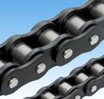
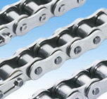
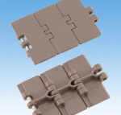
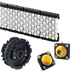
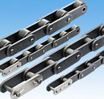

기어 모터 - 소형 (Gear Motor) / GMTA 시리즈 / 크로제모터 - 웜가속기 (Croise Motor) / 감속기(웜 파워 드라이브) / TD트로이드라이브(웜감속기, 소형,경량)
쇼크댐버 (Shock Damper) / 파워실린더 (Power Cylinder) / 파워쟈키 (Power Jackey)
플렉스 커플링 (Flexible Coupling) / 커플링 (Coupling) / 플렉스 커플링 (Jaw-Flex ) / 롤라체인커플링 (Roller Chain) / 나일론 체인 커플링(Nylon Chain)
무급유체인 (Lambda Chain) / 드라이브 체인 (Drive Chains) / 드라이브 체인, 악세서리(Drive Chain Accessories) / 탑체인 (Top Chains)
탑체인부품 (Top Chain Components) / 소형 컨베어체인 (Small Size Conveyor Chains) / 대형 컨베어체인 (Large Size Conveyor Chains) / 케이블베어 (Cableveyor)
스프라켓 (Fit Bore Sprocket) / Look스프라켓 (Look Sprocket) / RS기준 스프라켓 (RS Standard Sprocket) / 내환경스프라켓 (Environment Resistant Series)
RF스프라켓 (RF Sprocket) / 컨베어체인용 스프라켓 (Sprockets for Conveyor Chains) / 탑체인전용 스프라켓 (Sprockets for Top Chains)
체인 타이트너 (Chain tightener) / 픞라스틱 레일 (Plastic Guide Rails) / 타이밍벨트 (Timing Belts) / 우레탄벨트 (Urethane Belt) / 타이밍풀리 (Timing Pulley)
무급유-람다체인(Lube-Free Lambda Chain)
범용·내환경 드라이브체인(Drive Chains)
탑체인(Top Chains)
탑체인 부품(Top Chain Components)
소형 컨베어체인(Small Size Conveyor Chains)
대형 컨베어체인(Large Size Conveyor Chains)
서울특별시 마포구 독막로 129 균빌딩 5층 타츠타 대표이사 박민희 통신판매업신고 : 麻浦第000000号
TEL: 02-1234-1234 FAX: 02-1234-1234 MAIL : tatsuta@tatsuta.com
Copyright ⓒ TATSUTA. All Rights Reserved.